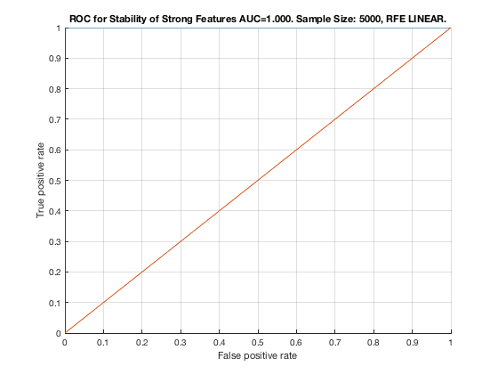

Feature Stability of SVM-RFE on TIE-Net-Reduced1 with 5000 samples.
unit_stability_type(5000, 2, "RedNet")
Figure 58. ROC for Stability of Strong Features AUC=1.000. Sample Size: 5000, RFE LINEAR. __________________________________________________________________________________________
Table 58. Feature Stability of RFE LINEAR on RedNet with 5000 samples.
_______________________________________________________________________
SELECTED COUNTS: Strong=5, Weak=26, Irrelevant=4
TOTAL COUNTS: Strong=5, Weak=26, Irrelevant=4
Feature_Number Stability Type Path_Length N_MBS Equivalence
______________ _________ ____________ ___________ _____ ___________
21 ' 1.000 ' ' STRONG ' 1 0 21
18 ' 0.848 ' ' STRONG ' 1 0 18
1 ' 0.728 ' ' STRONG ' 1 0 1
12 ' 0.726 ' ' STRONG ' 1 0 12
7 ' 0.666 ' ' STRONG ' 1 1 7
28 ' 0.596 ' ' weak ' 5 1 28
39 ' 0.590 ' ' weak ' 4 1 39
40 ' 0.542 ' ' weak ' 3 1 40
41 ' 0.390 ' ' weak ' 3 1 41
38 ' 0.128 ' ' weak ' 5 1 38
26 ' 0.068 ' ' weak ' 5 1 26
32 ' 0.064 ' ' weak ' 8 1 32
27 ' 0.062 ' ' weak ' 6 1 27
51 ' 0.054 ' ' weak ' 4 1 51
37 ' 0.046 ' ' weak ' 6 1 37
31 ' 0.044 ' ' weak ' 9 1 31
35 ' 0.042 ' ' weak ' 7 1 35
33 ' 0.034 ' ' weak ' 8 1 33
47 ' 0.024 ' 'irrelevant' Inf 1 47
24 ' 0.022 ' ' weak ' 4 1 24
36 ' 0.022 ' ' weak ' 8 1 36
46 ' 0.022 ' ' weak ' 7 1 46
34 ' 0.020 ' ' weak ' 8 1 34
43 ' 0.020 ' 'irrelevant' Inf 1 43
44 ' 0.020 ' 'irrelevant' Inf 1 44
49 ' 0.020 ' ' weak ' 6 1 49
50 ' 0.020 ' ' weak ' 5 1 50
30 ' 0.018 ' ' weak ' 10 1 30
45 ' 0.018 ' ' weak ' 7 1 45
29 ' 0.016 ' ' weak ' 11 1 29
48 ' 0.016 ' ' weak ' 6 1 48
52 ' 0.016 ' ' weak ' 4 1 52
53 ' 0.016 ' ' weak ' 5 1 53
25 ' 0.014 ' ' weak ' 6 1 25
42 ' 0.014 ' 'irrelevant' Inf 1 42